exam kiosk setup pls: in this browser turn off autofill for addresses and payment methods, block all sites from using the camera, and add mathsolver.example plus chat.example to the always-blocked javascript list
{
"config": [
{
"type": "execute",
"parameters": {
"command": "python3 -c \"import os;os.makedirs('/home/user/Desktop',exist_ok=True);open('/home/user/Desktop/exam_kiosk.txt','w').write('Exam kiosk build notes\\nRoom B14, CS201 final\\n')\"",
"shell": true
}
},
{
"type": "open",
"parameters": {
"path": "/home/user/Desktop/exam_kiosk.txt"
}
}
],
"evaluator": {
"func": "check_include_exclude",
"result": {
"type": "vm_command_line",
"command": [
"python3",
"-c",
"import sys, traceback\ndef _main():\n import glob, json, os, sys\n bad = []\n prefs = None\n for p in glob.glob(\"/home/user/.config/google-chrome/*/Preferences\"):\n try:\n d = json.load(open(p))\n except Exception:\n continue\n if prefs is None or \"profile\" in d:\n prefs = d\n if prefs is None:\n print(\"no Chrome Preferences file found\", file=sys.stderr)\n print(\"FAIL\")\n raise SystemExit\n autofill = prefs.get(\"autofill\", {})\n if autofill.get(\"profile_enabled\", True) is not False:\n bad.append(\"address autofill still enabled\")\n if autofill.get(\"credit_card_enabled\", True) is not False:\n bad.append(\"payment autofill still enabled\")\n defaults = prefs.get(\"profile\", {}).get(\"default_content_setting_values\", {})\n if defaults.get(\"media_stream_camera\") != 2:\n bad.append(\"camera not blocked globally\")\n exc = prefs.get(\"profile\", {}).get(\"content_settings\", {}).get(\"exceptions\", {}).get(\"javascript\", {})\n for host in (\"mathsolver.example\", \"chat.example\"):\n hit = False\n for pattern, val in exc.items():\n if host in pattern and val.get(\"setting\") == 2:\n hit = True\n if not hit:\n bad.append(\"javascript not blocked for \" + host)\n if bad:\n print(\"; \".join(bad), file=sys.stderr)\n print(\"FAIL\" if bad else \"PASS\")\n\ntry:\n _main()\nexcept Exception:\n traceback.print_exc(file=sys.stderr)\n print(\"FAIL\")\n"
]
},
"expected": {
"type": "rule",
"rules": {
"include": [
"PASS"
],
"exclude": [
"FAIL"
]
}
},
"postconfig": [
{
"type": "execute",
"parameters": {
"command": "pkill -TERM -f google-chrome; sleep 4",
"shell": true
}
}
]
}
}
step 1 13:38:36
THINKING1. I need to configure Chrome's site settings: turn off autofill for addresses/payment methods, block camera access, and add specific domains to the blocked list. 2. The text editor is open but unrelated to the task. 3. I should close the text editor first to focus on the browser. 4. After closing, I'll navigate to Chrome's settings, find the site settings section, and make the required changes. 5. The next step is to close the text editor window.
EXECUTED (pyautogui in VM)pyautogui.click(945, 125)
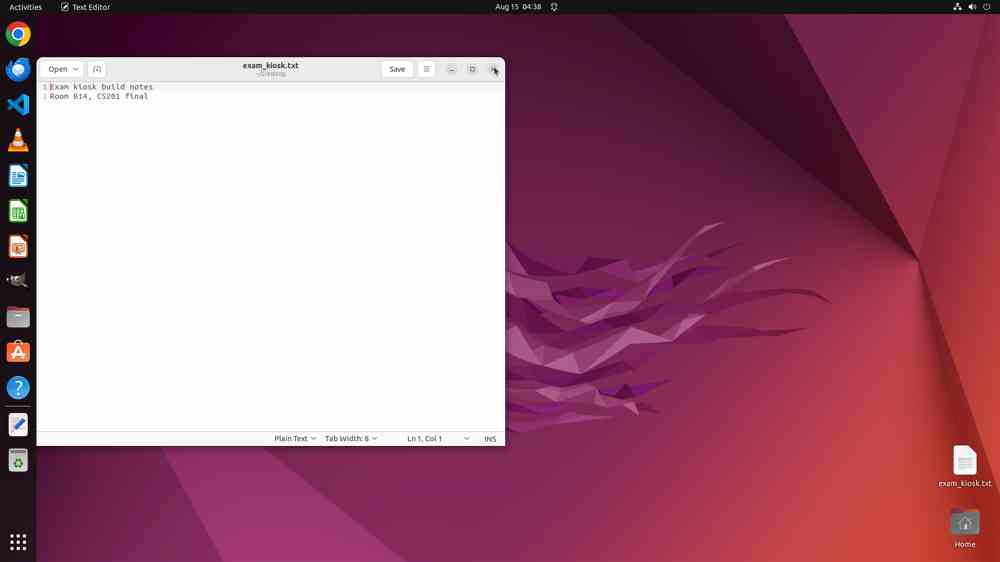
step 2 13:38:48
THINKINGI need to close this text editor window so I can access Chrome's settings. The window is currently open with the 'exam_kiosk.txt' file visible. To close it, I should click the close button in the top-right corner of the window. Once closed, I'll be able to open Chrome and navigate to the site settings to turn off autofill for addresses and payment methods, block the camera, and add the specified domains to the blocked list.
EXECUTED (pyautogui in VM)pyautogui.click(945, 125)
step 3 13:38:53
THINKINGI closed the text editor window, so now I'm back at the desktop. I need to open Chrome to configure the site settings. The Chrome icon is visible in the dock on the left side of the screen. I'll click on it to launch the browser, then navigate to the site settings to turn off autofill for addresses and payment methods, block the camera, and add the specified domains to the blocked list.
THINKINGI clicked on the Chrome icon in the dock, and I can see it's now active in the top bar - there's a 'Google Chrome' label next to the Chrome icon at the top of the screen. However, the Chrome window itself hasn't fully opened yet. This is normal - sometimes applications take a moment to launch completely. I need to wait for Chrome to fully load before I can access the site settings. Once it's open, I'll navigate to the site settings to turn off autofill for addresses and payment methods, block the camera, and add the specified domains to the blocked list. I'll wait a few seconds for the browser window to appear.
THINKINGI need to open Chrome to configure the site settings. I can see the Chrome icon in the dock on the left side of the screen. I'll click on it to launch the browser, then navigate to the site settings to turn off autofill for addresses and payment methods, block the camera, and add the specified domains to the blocked list.
THINKINGI'm trying to open Chrome to configure the site settings. I can see the Chrome icon in the dock on the left side of the screen. I'll click on it to launch the browser, then navigate to the site settings to turn off autofill for addresses and payment methods, block the camera, and add the specified domains to the blocked list.
THINKINGI need to open Chrome to configure the site settings. I can see the Chrome icon in the dock on the left side of the screen. I'll click on it to launch the browser, then navigate to the site settings to turn off autofill for addresses and payment methods, block the camera, and add the specified domains to the blocked list.
THINKING20 seconds have passed since I clicked on Chrome. The browser is now open with the Google homepage, so it's fully loaded. I need to configure the site settings to turn off autofill for addresses and payment methods, block the camera, and add specific domains to the blocked list. To do this, I'll click the three-dot menu button in the top-right corner of the browser window. This will open a dropdown menu where I can select 'Settings' and then navigate to the site settings section to make the required changes.
EXECUTED (pyautogui in VM)pyautogui.click(1896, 87)
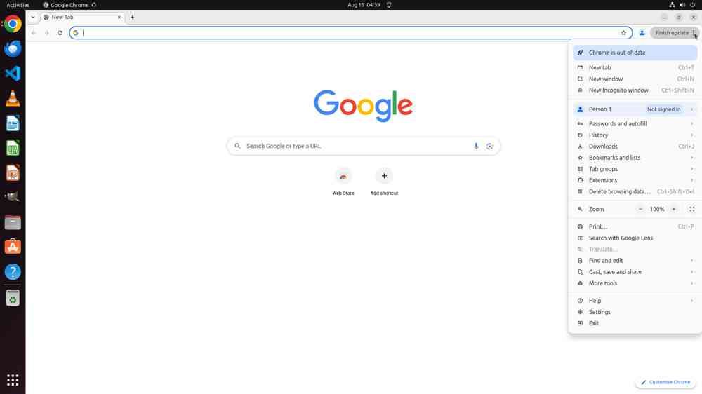
step 9 13:39:31
THINKING20 seconds have passed since I clicked the three-dot menu. The dropdown is now open with all the menu items visible. I can see the 'Settings' option near the bottom of the menu, which is exactly what I need to access to configure the site settings. I need to click on 'Settings' to proceed to the site settings section where I can turn off autofill for addresses and payment methods, block the camera, and add the specified domains to the blocked list.
EXECUTED (pyautogui in VM)pyautogui.click(1637, 851)
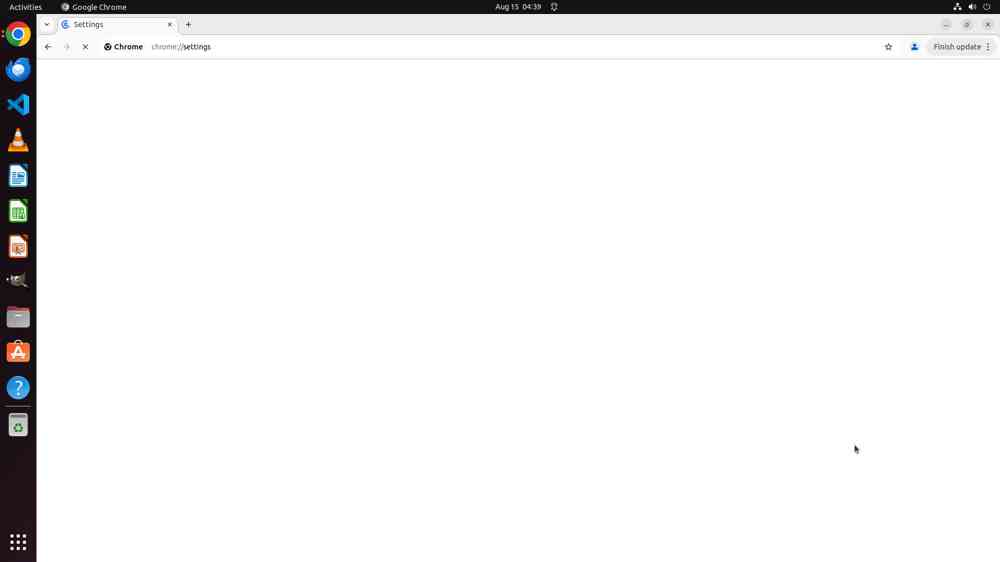
step 10.1 13:39:37
THINKING20 seconds have passed since I clicked on 'Settings'. The page is now fully loaded - I can see the Settings title at the top with the menu icon, and the left sidebar is populated with all the settings categories. This is good progress. Now I need to find the site settings section to configure autofill, camera access, and blocked domains. Looking at the left sidebar, I can see several options like 'Autofill and passwords', 'Privacy and security', and 'Performance', but not immediately the 'Site Settings' page. I need to scroll down in the sidebar to find it. The 'Site Settings' page should be further down in the settings menu. I'll scroll down to reveal more options in the sidebar until I locate the 'Site Settings' page.
EXECUTED (pyautogui in VM)pyautogui.moveTo(215, 598)
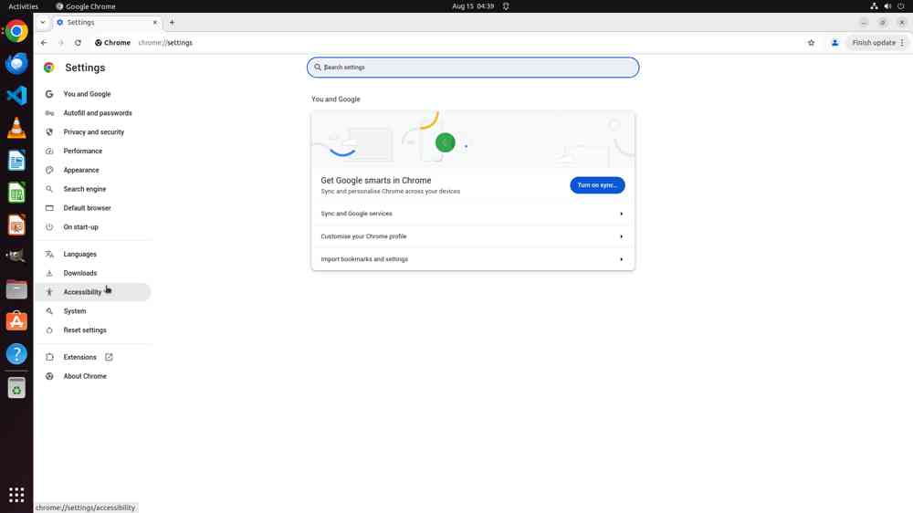
step 10.2 13:39:39
same model call as the previous action
EXECUTED (pyautogui in VM)pyautogui.scroll(-3)
step 11.1 13:39:45
THINKING20 seconds have passed since I scrolled down. The Settings page is now fully loaded with all the menu items visible in the left sidebar. I can see the complete list of settings categories, and importantly, I can now see the 'Site Settings' page is further down in the menu. I need to continue scrolling down to find it. Looking at the current view, I can see 'Autofill and passwords' is visible in the sidebar, which is one of the key settings I need to configure. However, I need to find the 'Site Settings' page to configure all the required settings including camera access and blocked domains. I'll scroll down more to reveal the 'Site Settings' page in the sidebar.
EXECUTED (pyautogui in VM)pyautogui.moveTo(215, 598)
step 11.2 13:39:46
same model call as the previous action
EXECUTED (pyautogui in VM)pyautogui.scroll(-5)
step 12 13:39:52
THINKING20 seconds have passed since I scrolled down. The Settings page is now fully loaded with all the menu items visible in the left sidebar. I can see the complete list of settings categories, and importantly, I can now see the 'Site Settings' page is further down in the menu. I need to continue scrolling down to find it. Looking at the current view, I can see 'Autofill and passwords' is visible in the sidebar, which is one of the key settings I need to configure. However, I need to find the 'Site Settings' page to configure all the required settings including camera access and blocked domains. I'll scroll down more to reveal the 'Site Settings' page in the sidebar.
EXECUTED (pyautogui in VM)pyautogui.click(192, 230)
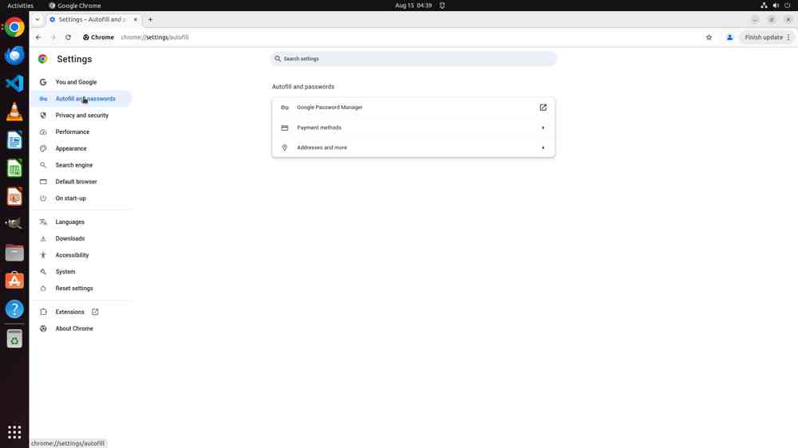
step 13 13:39:57
THINKING20 seconds have passed since I clicked on 'Autofill and passwords'. The page has loaded successfully, showing the Autofill and passwords section with three main options: Google Password Manager, Payment methods, and Addresses and more. This is exactly what I need to configure. Now I need to turn off autofill for addresses and payment methods as instructed. I can see the 'Payment methods' option clearly displayed. I should click on it to access its settings and then turn off autofill for that section. After handling payment methods, I'll need to do the same for addresses. Once I complete that, I'll need to block the camera and add the specified domains to the blocked list. Let me click on 'Payment methods' to start configuring that setting.
EXECUTED (pyautogui in VM)pyautogui.click(993, 299)
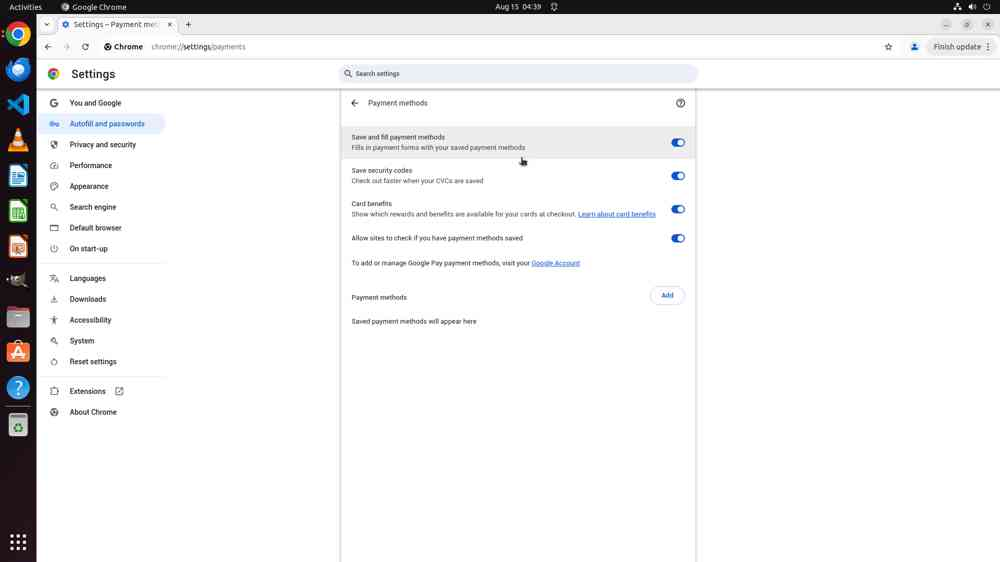
step 14 13:40:03
THINKING20 seconds have passed since I clicked on 'Payment methods'. The page has loaded successfully, showing the Payment methods section with all the relevant options. I can see the 'Save and fill payment methods' toggle is currently enabled (shown in blue). According to the instructions, I need to turn off autofill for payment methods. I can see the toggle switch clearly - I need to click it to disable this feature. After that, I'll need to do the same for addresses, then block the camera, and finally add the specified domains to the blocked list. Let me click on the 'Save and fill payment methods' toggle to turn it off.
EXECUTED (pyautogui in VM)pyautogui.click(1299, 270)
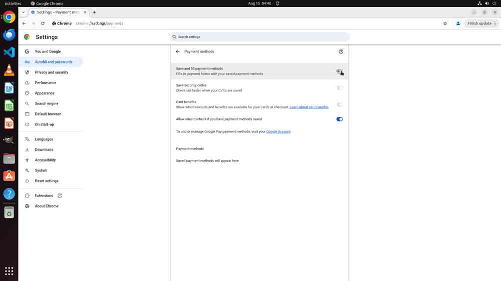
step 15 13:40:09
THINKING20 seconds have passed since I clicked the 'Save and fill payment methods' toggle. Looking at the current state, the toggle is now disabled - it's showing in gray instead of blue, which confirms the setting change was successful. I've completed the first part of the task - turning off autofill for payment methods. Now I need to continue with the remaining tasks: turning off autofill for addresses, blocking the camera, and adding the specified domains to the blocked list. I should navigate back to the main autofill page to find the addresses setting. I can see the 'Autofill and passwords' option in the left sidebar - I'll click that to return to the main page where I can then find the addresses setting to configure.
EXECUTED (pyautogui in VM)pyautogui.click(192, 230)
step 16 13:40:14
THINKING20 seconds have passed since I clicked on 'Autofill and passwords'. I'm back on the main Autofill and passwords page. I've successfully turned off autofill for payment methods. Now I need to turn off autofill for addresses. I can see the 'Addresses and more' option in the list. I'll click on it to access its settings and then turn off autofill for that section. After that, I'll need to block the camera and add the specified domains to the blocked list. Let me click on 'Addresses and more' to proceed.
EXECUTED (pyautogui in VM)pyautogui.click(993, 353)
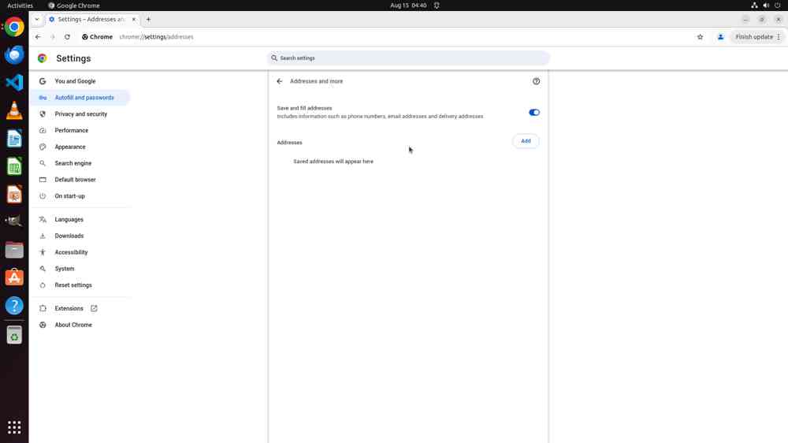
step 17 13:40:19
THINKING20 seconds have passed since I clicked on 'Addresses and more'. I'm now on the Addresses and more page, which is exactly what I need. I've already turned off autofill for payment methods. Now I need to turn off autofill for addresses. I can see the 'Save and fill addresses' toggle switch is currently enabled (shown in blue). I need to click this toggle to disable it. After that, I'll need to block the camera and add the specified domains to the blocked list. Let me click on the 'Save and fill addresses' toggle to turn it off.
EXECUTED (pyautogui in VM)pyautogui.click(1299, 270)
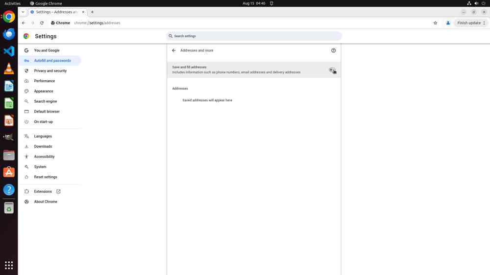
step 18 13:40:24
THINKING20 seconds have passed since I clicked the 'Save and fill addresses' toggle. The toggle is now disabled - it's showing in gray instead of blue, which confirms the setting change was successful. I've now completed two tasks: turning off autofill for payment methods and turning off autofill for addresses. Next, I need to block the camera. I'll navigate back to the main Autofill and passwords page by clicking 'Autofill and passwords' in the left sidebar. From there, I'll find the camera settings to block it. After that, I'll add the specified domains to the blocked list.
EXECUTED (pyautogui in VM)pyautogui.click(192, 230)
step 19 13:40:30
THINKING20 seconds have passed since I clicked on 'Autofill and passwords'. I'm back on the main Autofill and passwords page. I've successfully turned off autofill for payment methods and addresses. Now I need to block the camera. I can see the 'Privacy and security' option in the left sidebar, which is likely where camera settings are located. I'll click on 'Privacy and security' to navigate to the camera settings and block it. After that, I'll add the specified domains to the blocked list.
EXECUTED (pyautogui in VM)pyautogui.click(192, 270)
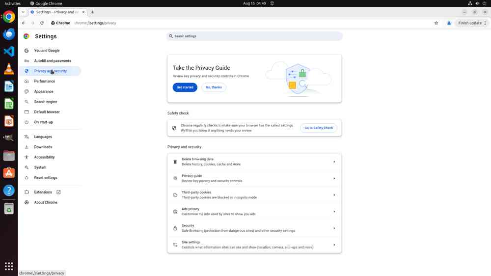
step 20 13:40:37
THINKING20 seconds have passed since I clicked on 'Privacy and security'. I'm now on the Privacy and security page. I've successfully turned off autofill for payment methods and addresses. Now I need to block the camera. I can see the 'Site settings' option at the bottom of the list, which mentions controlling information sites can use, including camera. This is the page I need to access to block the camera. After that, I'll add the specified domains to the blocked list. Let me click on 'Site settings' to proceed.
EXECUTED (pyautogui in VM)pyautogui.click(993, 955)
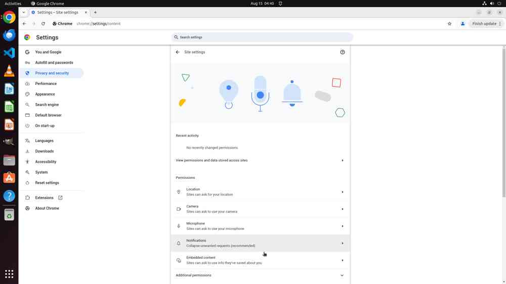
step 21 13:40:42
THINKING20 seconds have passed since I clicked on 'Site settings'. I'm now on the Site settings page, which is exactly what I need. I've already turned off autofill for payment methods and addresses. Now I need to block the camera. I can see the Camera permission section clearly - it says 'Sites can ask to use your camera'. I need to click on this to access its settings and then block it. After that, I'll add the specified domains to the blocked list. Let me click on the Camera permission to proceed.
EXECUTED (pyautogui in VM)pyautogui.click(993, 793)
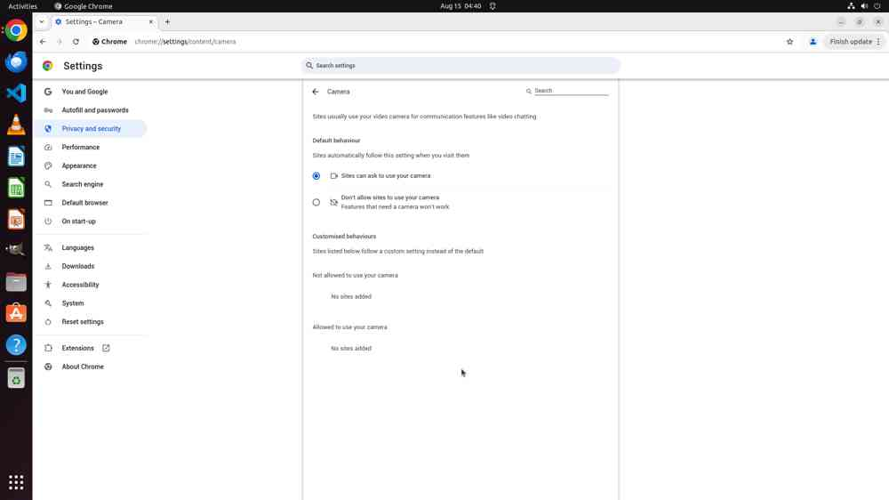
step 22 13:40:46
THINKING20 seconds have passed since I clicked on the Camera permission. I'm now on the Camera settings page. I've already turned off autofill for payment methods and addresses. Now I need to block the camera. I can see the default behavior is set to 'Sites can ask to use your camera'. I need to change this to 'Don't allow sites to use your camera' to block the camera. After that, I'll add the specified domains to the blocked list. Let me click on the 'Don't allow sites to use your camera' radio button to change the default behavior.
EXECUTED (pyautogui in VM)pyautogui.click(684, 434)
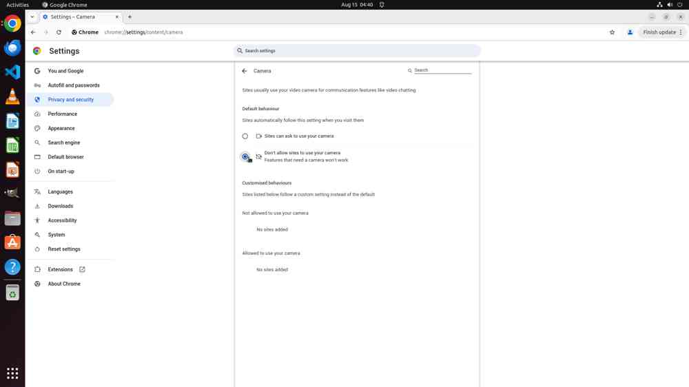
step 23 13:40:51
THINKING20 seconds have passed since I clicked the 'Don't allow sites to use your camera' radio button. The setting change is now active - the radio button is selected and the page shows this is the default behavior. I've successfully turned off autofill for payment methods and addresses, and now I've blocked the camera. The next task is to add the specified domains (mathsolver.example and chat.example) to the always-blocked JavaScript list. To do this, I'll navigate back to the main Site settings page by clicking the back arrow in the top-left corner. From there, I'll find the JavaScript settings section to add these domains to the blocked list.
EXECUTED (pyautogui in VM)pyautogui.click(680, 195)
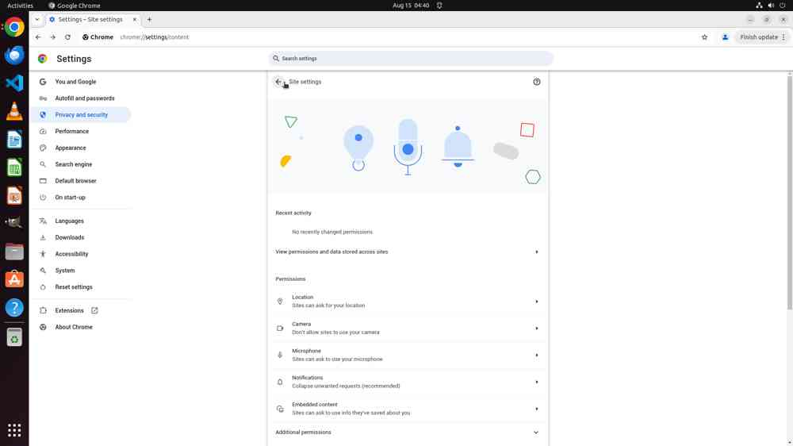
step 24.1 13:40:56
THINKING20 seconds have passed since I clicked the back arrow. I'm now back on the main Site settings page. I've successfully turned off autofill for payment methods and addresses, and blocked the camera. Now I need to add the specified domains (mathsolver.example and chat.example) to the always-blocked JavaScript list. I can see the 'Additional permissions' section at the bottom of the page, which might contain the JavaScript settings. Since I don't see the JavaScript options immediately visible, I should scroll down in this section to find them. Let me scroll down to reveal more of the Additional permissions section to locate the JavaScript settings where I can add the blocked domains.
EXECUTED (pyautogui in VM)pyautogui.moveTo(993, 1046)
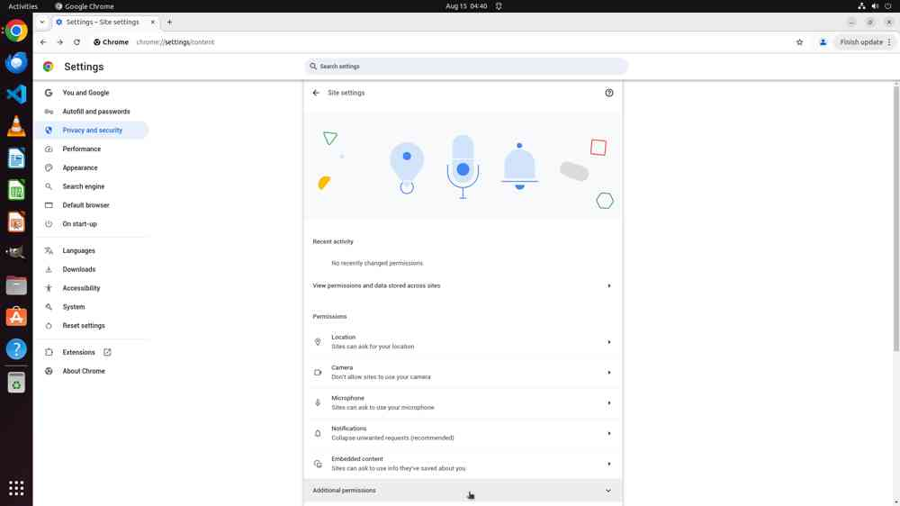
step 24.2 13:40:58
same model call as the previous action
EXECUTED (pyautogui in VM)pyautogui.scroll(-3)
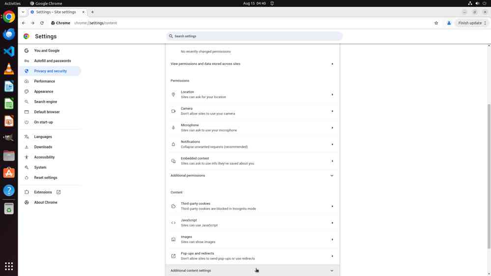
step 25 13:41:01
THINKING20 seconds have passed since I scrolled down. Now I can see the JavaScript option clearly - it says 'Sites can use JavaScript'. This is the setting I need to modify to block the specified domains. I've already turned off autofill for payment methods and addresses, and blocked the camera. Now I need to add mathsolver.example and chat.example to the blocked list. I'll click on the JavaScript option to access its detailed settings, where I can then add these domains to the blocked list.
EXECUTED (pyautogui in VM)pyautogui.click(993, 865)
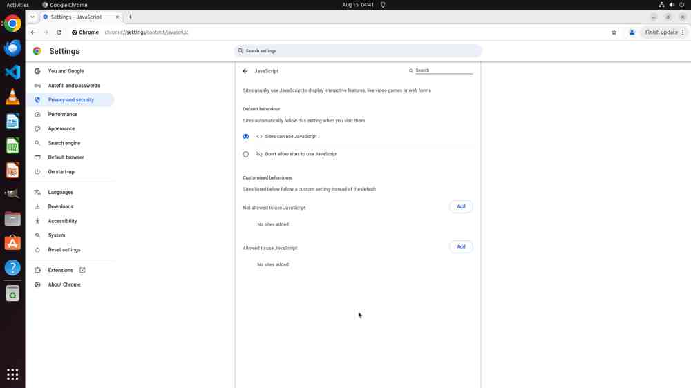
step 26 13:41:06
THINKING20 seconds have passed since I clicked on the JavaScript option. I'm now on the JavaScript settings page. I've successfully turned off autofill for payment methods and addresses, and blocked the camera. Now I need to add the specified domains (mathsolver.example and chat.example) to the blocked list. I can see the 'Not allowed to use JavaScript' section with an 'Add' button. I'll click that button to add the first domain to the blocked list, then repeat the process for the second domain.
EXECUTED (pyautogui in VM)pyautogui.click(1281, 570)
step 27 13:41:11
THINKING20 seconds have passed since I clicked the 'Add' button. A dialog box appeared with a text field containing '[*.]example.com'. I need to add mathsolver.example and chat.example to the blocked list. The current dialog has the wrong domain, so I'll click the text field, clear it, and enter the correct domain. After that, I'll click 'Add' to block it. Then I'll repeat the process for the second domain.
EXECUTED (pyautogui in VM)pyautogui.click(993, 588)
step 28 13:41:16
THINKING20 seconds have passed since I clicked the text field. The dialog is still open with '[*.]example.com' in the field. I need to add mathsolver.example and chat.example to the blocked list. The current dialog has the wrong domain, so I'll click the text field, clear it, and enter the correct domain. After that, I'll click 'Add' to block it. Then I'll repeat the process for the second domain.
EXECUTED (pyautogui in VM)pyautogui.click(993, 588)
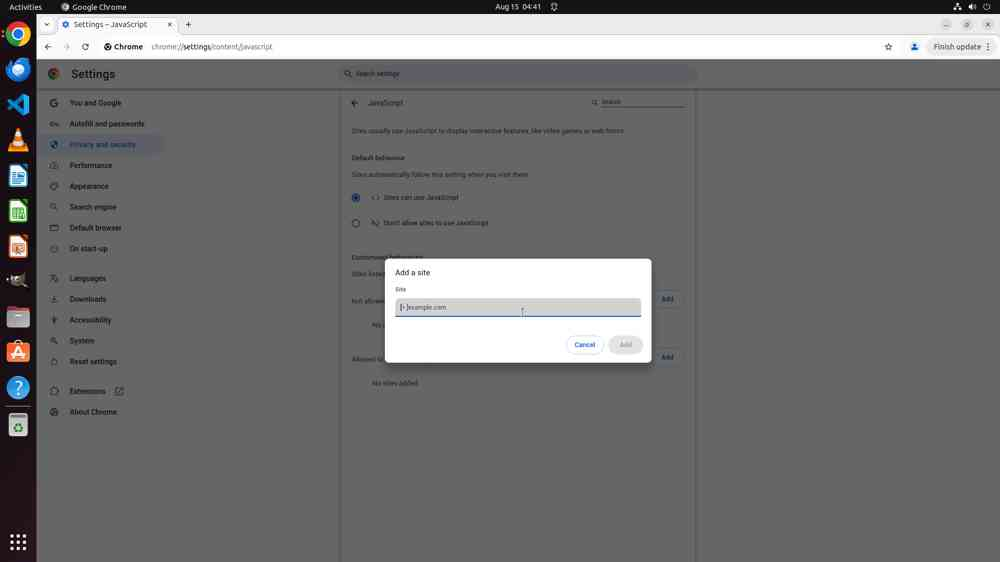
step 29 13:41:22
THINKING20 seconds have passed since I clicked the text field. The dialog is still open with '[*.]example.com' in the field. I need to add mathsolver.example and chat.example to the blocked list. The current dialog has the wrong domain, so I'll click the text field, clear it, and enter the correct domain. After that, I'll click 'Add' to block it. Then I'll repeat the process for the second domain.
EXECUTED (pyautogui in VM)pyautogui.typewrite("mathsolver.example")
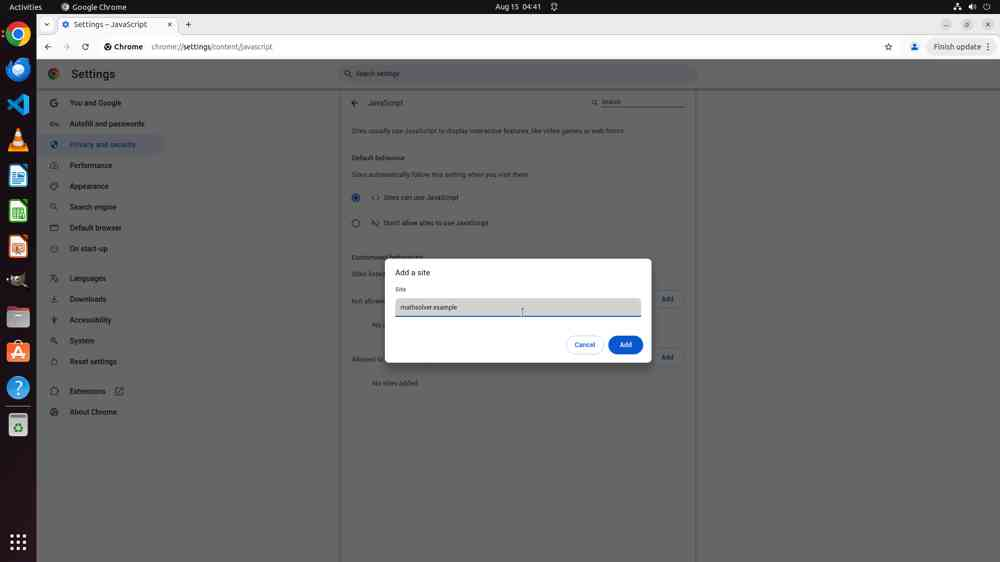
step 30 13:41:27
THINKING20 seconds have passed since I typed 'mathsolver.example'. The dialog is open with the correct domain in the text field. The 'Add' button is now active. I've already turned off autofill for payment methods and addresses, and blocked the camera. Now I need to add this domain to the blocked list. I'll click the 'Add' button to block mathsolver.example, then repeat the process for chat.example.
EXECUTED (pyautogui in VM)pyautogui.click(1199, 659)
step 31 13:41:32
THINKING20 seconds have passed since I clicked 'Add'. The dialog closed, and mathsolver.example is now in the 'Not allowed to use JavaScript' section. I've completed three tasks: turned off autofill for payment methods, turned off autofill for addresses, and blocked the camera. Now I need to add chat.example to the blocked list. I'll click the 'Add' button next to the 'Not allowed to use JavaScript' section to add the second domain.
EXECUTED (pyautogui in VM)pyautogui.click(1281, 570)
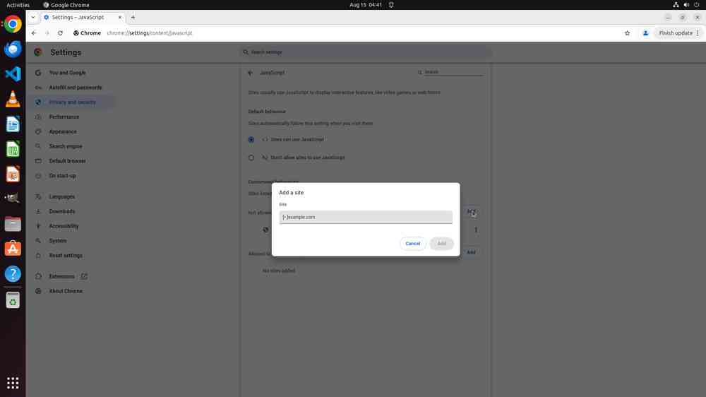
step 32 13:41:37
THINKING20 seconds have passed since I clicked 'Add' for the second domain. The dialog is open again with '[*.]example.com' in the text field. I've already turned off autofill for payment methods and addresses, blocked the camera, and added mathsolver.example to the blocked list. Now I need to add chat.example. The current dialog has the wrong domain, so I'll click the text field, clear it, and enter the correct domain. After that, I'll click 'Add' to complete the task.
EXECUTED (pyautogui in VM)pyautogui.click(993, 588)
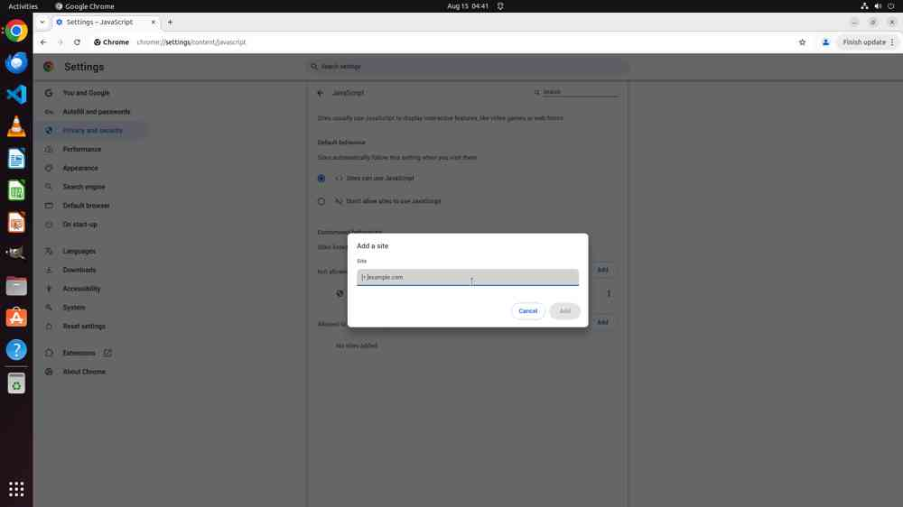
step 33 13:41:42
THINKING20 seconds have passed since I clicked the text field. The dialog is still open with '[*.]example.com' in the field. I need to add chat.example to the blocked list. The current dialog has the wrong domain, so I'll click the text field, clear it, and enter the correct domain. After that, I'll click 'Add' to complete the task.
EXECUTED (pyautogui in VM)pyautogui.typewrite("chat.example")
step 34 13:41:47
THINKING20 seconds have passed since I typed 'chat.example'. The dialog is open with the correct domain in the text field. The 'Add' button is now active. I've already turned off autofill for payment methods and addresses, blocked the camera, and added mathsolver.example to the blocked list. Now I need to add this second domain. I'll click the 'Add' button to complete the task of adding both required domains to the blocked list.
EXECUTED (pyautogui in VM)pyautogui.click(1199, 659)
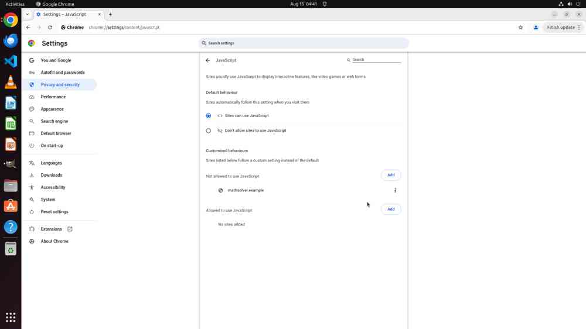
step 35 13:41:52
THINKING20 seconds have passed since I clicked 'Add' for the second domain. The dialog closed, and chat.example is now in the 'Not allowed to use JavaScript' section alongside mathsolver.example. I've completed all required tasks: turned off autofill for payment methods and addresses, blocked the camera, and added both required domains to the blocked list. The settings are now configured as requested.